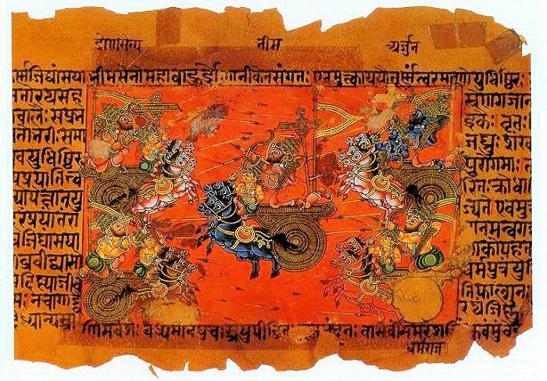
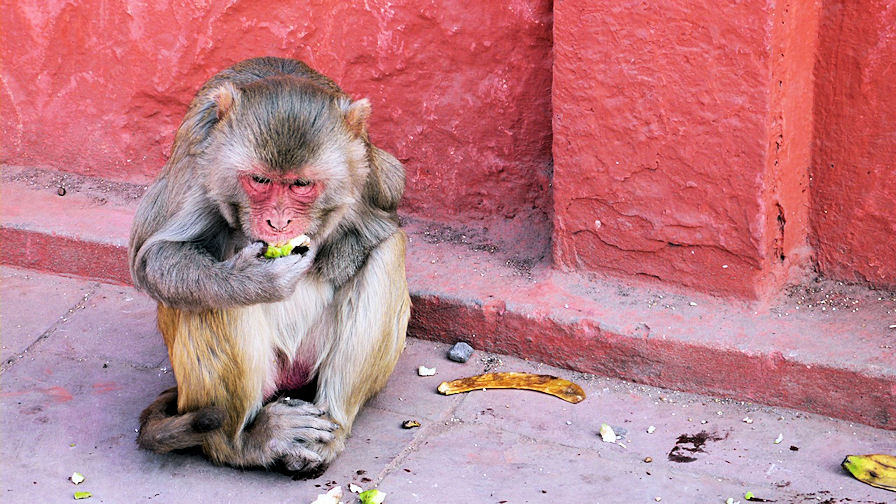
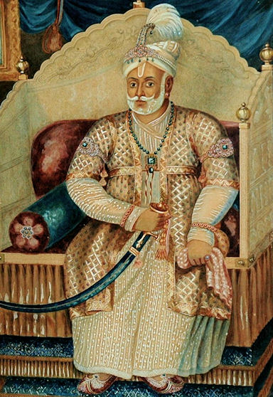
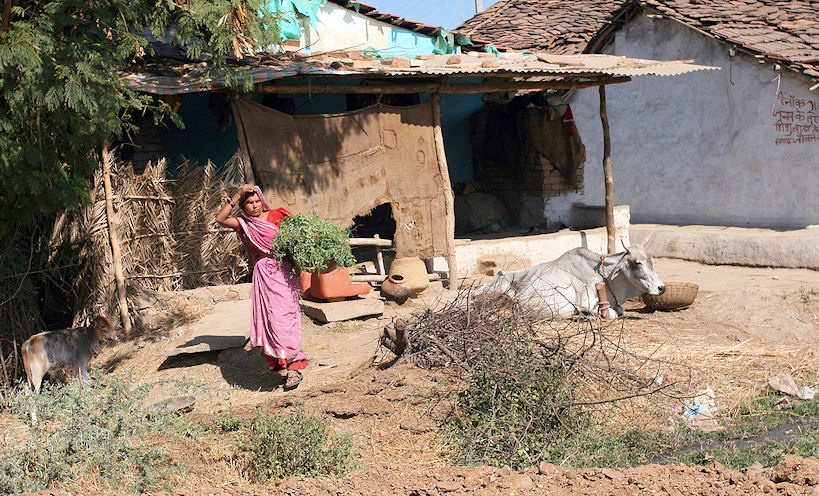

mailto:payer@payer.de
Zitierweise | cite as:
Payer, Alois <1944 - >: Sanskritkurs. -- Lösung der Übungen. -- Übungen Lektion 6 - 10. -- Fassung vom 2008-11-29. -- URL: http://www.payer.de/sanskritkurs/uebung06.htm
Erstmals hier publiziert: 2008-11-29
Überarbeitungen:
Anlass: Lehrveranstaltungen 1980 - 1984
©opyright: Dieser Text steht der Allgemeinheit zur Verfügung. Eine Verwertung in Publikationen, die über übliche Zitate hinausgeht, bedarf der ausdrücklichen Genehmigung des Verfassers
Dieser Text ist Teil der Abteilung Sanskrit von Tüpfli's Global Village Library
Falls Sie die diakritischen Zeichen nicht dargestellt bekommen, installieren Sie eine Schrift mit Diakritika wie z.B. Tahoma.
Die Devanāgarī-Zeichen sind in Unicode kodiert. Sie benötigen also eine Unicode-Devanāgarī-Schrift.
A) Bilden Sie mit den in Klammern angegebenen Wurzeln durch Einsetzen Verbalsätze:
brāhmaṇas ... (yaj, nṛt, viś, man, yudh, nī, muh)
ब्राह्मणस् ... यज्, नृत्, विश्, मन्, युध्, नी, मुह्
brāhmaṇo yajati / yajate. brāhmaṇo nṛtyati. brāhmaṇo viśati. brāhmaṇo manyate. brāhmaṇo yudhyate. brāhmaṇo nayati / nayate. brāhmanō muhyati.
ब्राह्मणो यजति । ब्राह्मणो यजते । ब्राह्मणो नृत्यति । ब्राह्मणो विशति । ब्राह्मणो मन्यते । ब्राह्मणो युध्यते । ब्राह्मणो नयति । ब्राह्मणो नयते । ब्राह्मणो मुह्यति ।
devas ... (nṛt, yudh, smṛ, sṛj)
देवस् ... नृत्, युध्, स्मृ, सृज्
devo nṛtyati. devo yudhyate. devaḥ smarati. devaḥ sṛjati.
देवो नृत्यति । देवो युध्यते । देवः स्मरति । देवः सृजति ।
kavis ... (man, smṛ, viś)
कविस् ... मन्, स्मृ, विश्
kavir manyate. kaviḥ smarati. kavir viśati.
कविर्मन्यते । कविः स्मरति । कविर्विशति ।
dhenus ... (viś, bhū)
धेनुस् ... विश्, भू
dhenur viśati. dhenur bhavati.
धेनुर्विशति । धेनुर्भवति ॥
B) Setzen Sie die in Übung A gebildeten Sätze in den Plural
brāhmaṇā yajanti / yajante / nṛtyanti / viśanti / manyante / yudhyante / nayanti / nayante / muhyanti.
ब्राह्मणा यजन्ति / यजन्ते / नृत्यन्ति / विशन्ति / मन्यन्ते / युध्यन्ते / नयन्ति / नयन्ते / मुह्यन्ति ।
devā nṛtyanti. devā yudhyante. devāḥ smaranti. devāḥ sṛjanti.
देवा नृत्यन्ति । देवा युध्यन्ते । देवाः स्मरन्ति । देवाः सृजन्ति ।
kavayo manyante. kavayaḥ smaranti. kavayo viśanti.
कवयो मन्यन्ते । कवयः स्मरन्ति । कवयो विशन्ति ।
dhenavo viśanti. dhenavo bhavanti.
धेनेवो विशन्ति । धेनवो भवन्ति ॥
C) Übersetzen Sie ins Sanskrit:
1. Er verehrt mit einem Opfer. (Der Opferpriester für einen Opferherrn)
yajati.
यजति ।
2. Śiva tanzt.
śivo nṛtyati.
शिवो नृत्यति ।
3. Rāma führt.
rāmo nayati.
रामो नयति ।
4. Śudras sind verwirrt.
śūdrā muhyanti.
शूद्रा मुह्यन्ति ।
5. Die Kṣatriyafrauen treten ein.
kṣatriyā viśanti.
क्षत्रिया विशन्ति ।
6. Der HERR lässt emanieren.
īśvaraḥ sṛjati.
ईश्वरः सृजति ।
7. Der Kṣatriya verehrt mit einem Opfer. (als Opferherr)
kṣatriyo yajate.
क्षत्रियो यजते ।
8. Śūdrafrauen tanzen.
śūdrā nṛtyanti.
शूद्रा नृत्यन्ति ।
9. Kṣatriyas kämpfen.
kṣatriyā yudhyante.
क्षत्रिया युध्यन्ते ।
10. Heilige Männer führen.
sādhavo nayanti.
साधवो नयन्ति ।
11. Sie erinnern sich.
smaranti.
स्मरन्ति ।
12. Wer (fem.) tanzt?
kā nṛtyati?
का नृत्यति ।
13. Die (erwähnte) Brahmanin tanzt.
sā brāhmaṇī nṛtyati.
सा ब्राह्मणी नृत्यति ॥
Abb.: kā nṛtyati? = का नृत्यति ।
[Bildquelle: Wikipedia, GNU FDLicense]
A) Einsetzübung: Bilden Sie Fragen, auf die die Sätze, die sie nach folgenden Einsetzübungen bilden, antworten sind:
1. devas ... (īśvara, nṛt, sṛj, agni, indra)
देवस् ... ईश्वर, नृत्, सृज्, अग्नि, इन्द्र
deva īśvaraḥ. devo nṛtyati. devaḥ sṛjati. devo 'gniḥ. deva indraḥ.
देव ईश्वरः । देवो नृत्यति । देवः सृजति । देवो ऽग्निः । देव इन्द्रः ।
2. (dvija, sādhu, kavi) ... brāhmaṇaḥ
द्विज, साधु, कवि ... ब्राह्मणः
dvijo brāhmaṇaḥ. sādhur brāhmaṇaḥ. kavir brāhmaṇaḥ.
द्विजो ब्राह्मणः । साधुर्ब्राह्मणः । कविर्ब्राह्मणः ।
3. (śruti) ... vedaḥ
श्रुति ... वेदः
śrutir vedaḥ.
श्रुतिर्वेदः ।
4. (veda) ... śrutiḥ
वेद ... श्रुतिः
vedaḥ śrutiḥ.
वेदः श्रुतिः ।
5. (brāhmaṇa, guru) ... yajanti
ब्राह्मण, गुरु ... यजन्ति
brāhmaṇā yajanti. guravo yajanti.
ब्राह्मणा यजन्ति । गुरवो यजन्ति ।
6. (devī) ... indrāṇī
देवी ... इन्द्राणी
devīndrāṇī.
देवीन्द्राणी ।
7. (śūdra, śūdrā, devī) ... nṛtyanti
शूद्र, शूद्रा, देवी ... नृत्यन्ति
śūdrā nṛtyanti. śūdrā nṛtyanti. devyo nṛtyanti.
शूद्रा नृत्यन्ति । शूद्रा नृत्यन्ति । देव्यो नृत्यन्ति ।
8. (kṣatriya) ... yudhyante
क्षत्रिय ... युध्यन्ते
kṣatriyā yudhyante.
क्षत्रिया युध्यन्ते ।
9. (brāhmaṇa, brāhmaṇī) ... viśanti
ब्राह्मण, ब्राह्मणी ... विशन्ति
brāhmaṇā viśanti. brāhmaṇyo viśanti.
ब्राह्मणा विशन्ति । ब्राह्मण्यो विशन्ति ।
10. (guru) ... candrakīrtiḥ
गुरु ... चन्द्रकीर्तिः
guruś candrakīrtiḥ.
गुरुश्चन्द्रकीर्तिः ।
11. (sādhu) ... rāmaḥ
साधु ... रामः
sādhū rāmaḥ.
साधू रामः ॥
B) Setzen Sie in den Plural:
1. brāhmaṇo yajati.
ब्राह्मणो यजति |
brāhmaṇā yajanti.
ब्राह्मणाः यजन्ति ।
2. kaiṣā.
कैषा |
kā etāḥ
का एताः ।
3. kṣatriyo yajate.
क्षत्रियो यजते |
kṣatriyā yajante.
क्षत्रिया यजन्ते ।
4. sādhvī smarati.
साध्वी स्मरति |
sādhvyaḥ smaranti.
साध्व्यः स्मरन्ति ।
5. vaiśyā muhyati.
वैशश्या मुह्यति |
vaiśyā muhyanti.
वैश्या मुह्यन्ति ।
6. sṛjati.
सृजति |
sṛjanti.
सृजन्ति ।
7. devī manyate.
देवी मन्यते |
devyo manyante.
देव्यो मन्यन्ते ।
8. gururviśati.
गुरुर्विशति |
guravo viśanti.
गुरवो विशन्ति ।
9. ko 'yam.
को ऽयम् |
ka ime / kay ime.
क इमे । कयिमे ।
10. iyaṃ devī nṛtyati.
इयं देवी नृत्यति |
imā devyo nṛtyanti.
इमा देव्यो नृत्यन्ति ।
11. eṣa devo yudhyate.
एष देवो युध्यते |
ete devā yudhyante.
एते देवा युध्यन्ते ।
12. sa sṛjati.
स सृजति |
te sṛjanti.
ते सृजन्ति ।
13. paśurdhenuḥ.
पशुर्धेनुः |
paśavo dhenavaḥ.
पशवो धेनवः ।
14. keyam.
केयम् |
kā imāḥ.
का इमाः ॥स्
C) Bilden Sie das Ātmanepada zu:
1. rāmo yajati.
रामो यजति |
rāmo yajate.
रामो यजते ।
2. kṣatriyā nayanti.
क्षत्रिया नयन्ति |
kṣatriyā nayante.
क्षत्रिया नयन्ते ॥
D) Bilden Sie das Femininum zu:
1. śūdro nayati.
शूद्रो नयति |
śūdrā nayati.
शूद्रा नयति.
2. sādhurviśati.
साधुर्विशति |
sādhvī viśati.
साध्वी विशति ।
3. brāhmaṇaḥ smarati.
ब्राह्मणः स्मरति |
brāhmaṇī smarati.
ब्राह्मणी स्मरति ।
4. kṣatriyo yudhyate.
क्षत्रियो युध्यते |
kṣatriyā yudhyate. kṣatriyī yudhyate.
क्षत्रिया युध्यते । क्षत्रियी युध्यते ।
5. devo guruḥ.
देवो गुरुः |
devī gurvī.
देवी गुर्वी ॥
E) Übersetzen Sie:
1. devatānnapūrṇā.
देवतान्नपूर्णा |
Annapūrṇā ist eine Gottheit.
2. śūdretarā.
शूद्रेतरा |
Itarā ist eine Śūdrafrau.
3. vaiśyastulādhāraḥ.
वैश्यस्तुलाधारः |
Tulādhara ist ein Vaiśya.
4. kavirmāghaḥ.
कविर्माघः |
Māgha ist ein Dichter.
5. devyumā.
देव्युमा |
Umā ist eine Göttin.
6. śrutirvedaḥ.
श्रुतिर्वेदः |
Der Veda ist Śruti.
7. dhenurviśati.
धेनुर्विशति |
Die Kuh tritt ein.
8. guruścaitanyaḥ.
गुरुश्चैतन्यः |
Caitanya ist ein Meister.
9. devīndrāṇī.
देवीन्द्राणी |
Indrāṇī ist eine Göttin.
10. sādhurguruḥ.
साधुर्गुरुः |
Der Meister ist ein Heiliger.
11. gururyajate.
गुरुर्यजते ||
Der Meister opfert als Opferherr.
F) Übersetzen Sie ins Sanskrit:
1. Rāma opfert (als Opferherr).
rāmo yajate.
रामो यजते ।
2. Durgā ist eine Göttin.
devī durgā.
देवी दुर्गा ।
3. Mīnākṣī ist eine Göttin.
devī mīnākṣī.
देवी मीनाक्षी ।
4. Sie sind
verwirrt.
muhyanti.
मुह्यन्ति ।
5. Rāma ist ein heiliger Mann.
sādhū rāmaḥ.
साधू रामः ।
6. Wer ist der HERR?
ka īśvaraḥ.
क ईश्वरः ।
7. Indra ist der HERR.
indra īśvaraḥ.
इन्द्र ईश्वरः ।
8. Die Nutztiere treten ein.
paśavo viśanti.
पशवो विशन्ति ।
9. Viṣṇu lässt emanieren = Viṣṇu erschafft.
viṣṇuḥ sṛjati.
विष्णुः सृजति ।
10. Zweimalgeborene sind gut.
sādhavo dvijātayaḥ.
साधवो द्विजातयः ।
11. Das dreifache (Wissen) ist der Sāmaveda, der Ṛgveda und der Yajurveda. (2 Möglichkeiten)
sāmargyajurvedās trayī. sāmaveda ṛgvedo yajurvedaś ca trayī.
सामर्ग्यजुर्वेदास्त्रयी । सामवेद ऋग्वेदो यजुर्वेदश्च त्रयी ।
12. Diese Göttin ist gut.
sādhvīyaṃ devī / sādhvy eṣā devī / sādhvī sā devī.
साध्व्यीयं देवी । साध्व्येषा देवी । साध्वी सा देवी.
13. Die fünf "Qualen" sind: Nichtwissen, Ichwahn, Leidenschaft (Liebe), Hass, Anhänglichkeit an den Leib. (2 Möglichkeiten)
avidyāsmitārāgadveṣābhniveśāḥ pañca kleśāḥ / avidyāsmitā rāgo dveṣo 'bhiniveśaś ca pañca kleśāḥ.
अविद्यास्मितारागद्वेषाभिनिवेशाः पञ्च क्लेशाः । अविद्यास्मिता रागो द्वेषो ऽभिनिवेशश्च पञ्च क्लेषाः ।
14. "Verweilungszustände Brahmas" sind: freundliches Wohlwollen, Mitgefühl, Mitfreude, Gleichmut. (2 Möglichkeiten)
maitrīkaruṇāmuditopekṣā brahmavihārāḥ / maitrī karuṇā muditopekṣā (ca) brahmavihārāḥ.
मैत्रीकरुणामुदितोपेक्षा ब्रह्मविहाराः । मैत्री करुणा मुदितोपेक्षा (च) ब्रह्मविहाराः ।
15. Diese Brahmanen opfern im Auftrag anderer.
ete / ime brāhmaṇā yajanti.
एते / इमे ब्राह्मणा यजन्ति ।
16. Brahmanen, Kṣatriyas und Vaśyas sind Zweimalgeborene. (2 Möglichkeiten)
dvijātayo brāhmaṇakṣatriyavaiśyāḥ / dvijātayo bṛāhmaṇāḥ kṣatriyā vaiśyāś ca.
द्विजातयो ब्राह्मणक्षत्रियवैश्याः । द्विजातयो ब्राह्मणाः क्षत्रिया वैश्याश्च् ।
17. Die Wissenschaften (für eine Fürsten) sind: Philosophie, das dreifache (Vedawissen), Ökonomie und Politik. (2 Möglichkeiten)
ānvīkṣikītrayīvārttādaṇḍanītayo vidyāḥ / ānvīkṣikī trayī vārttā daṇḍanītiś ca vidyāḥ.
आन्वीक्षिकीत्रयीवार्त्तादण्डनीतयो विद्याः । आन्वीक्षिकी त्रयी वार्त्ता दण्डनीतिश्च विद्याः ।
18 .Geht es Ihnen gut?
kiṃ kuśalam?
किं कुशलम् ।
19. (Es geht mir) in jeder Hinsicht gut.
sarvathā kuśalam.
सर्वथा कुशलम् ॥
Abb.: devatānnapūrṇā = देवतान्नपूर्णा
Annapurna (अन्नपूर्ण) I, Nepal (नेपाल)
[Bildquelle: Wolfgang Beyer / Wikipedia. --
GNU FDLicense]
A) Setzen Sie jeweils im Singular und Plural (sofern es keine Eigennamen sind) das direkte Objekt bzw. den Richtungsakkusativ ein:
1. brāhmaṇas ... yajati (deva, devī, viṣṇu, agni, devatā)
ब्राह्मणस् ... यजति (देव, देवी, विष्णु, अग्नि, देवता)
brāhmaṇo devaṃ / devān yajati. brāhmaṇo devīṃ / devīr yajati. brāhmaṇo viṣṇuṃ yajati. brāhmaṇo 'gniṃ yajati. brāhmaṇo devatām / devatā yajati.
ब्राह्मणो देवं यजति । ब्राह्मणो देवान्यजति । ब्राह्मणो देवीं यजते । ब्राह्मनो देवीर्यजति । ब्राह्मणो विष्णुं यजति । ब्राह्मनो ऽग्निं यजति | ब्राह्मणो देवतां यजति । ब्राह्मणो देवता यजति ।
2. gurus ... khādati (phala)
गुरुस् ... खादति (फल)
guruḥ phalṃ / phalāni khādati.
गुरुः फलं खादति । गुरुः फलानि खादति ।
3. sādhus ... gacchati (svarga)
साधुस् ... गच्छति (स्वर्ग)
sādhuḥ svargaṃ / svargān gacchati.
साधुः स्वर्गं गच्छति । साधुः स्वर्गान्गच्छति ।
4. śūdrā ... gacchati (naraka)
शूद्रा ... गच्छति (नरक)
sūdro narakaṃ / narakān gacchati.
शूद्रो नरकं गच्छति । शूद्रो नरकान्गच्छति ।
5. ... jayati (śūdra)
... जयति (शूद्र)
śūdraṃ jayati. śūdrāñ jayati.
शूद्रं जयति । शूद्रञ्जयति ।
6. ... labhate (dhenu, paśu, phala)
... लभते (धेनु, पशु, फल)
dhenuṃ labhate. dhenūr labhate. paśuṃ labhate. paśūṃḷ labhate. phalaṃ labhate. phalāni labhate.
धेनुं लभते । धेनूर्लभते । पशुं लभते । पशूंल्लभते । फलं लभते । फलानि लभते॥
B) Setzen Sie dien entsprechenden Verbformen ein:
1. sādhuḥ svargam ... (āp, gam, aś)
साधुः स्वर्गम् ... (आप्, गम्, अश्)
sādhuḥ svargam āpnoti. sādhuḥ svargaṃ gacchati. sādhuḥ svragam aśnute.
साधुः स्वर्गमाप्नोति । साधुः स्वर्गं गच्छति । साधुः स्व्रगमश्नुते ।
2. brāhmaṇaḥ somam ... (su) (2 Formen)
ब्राह्मणः सोमम् ... (सु)
brāhmaṇaḥ somaṃ sunoti / sunute.
ब्राह्मणः सोमं सुनोति । ब्राह्मणः सोमं सुनुते ।
3. sādhur gurum ... (śru)
साधुर्गुरुम् ... (श्रु)
sādhur guruṃ śṛṇoti.
साधुर्गुरुं शृणोति ।
4. devī ... (kup, krudh)
देवी ... (कुप्, क्रुध्)
devī kupyati. devī krudhyati.
देवी कुप्यति । देवी क्रुध्यति ।
C) Setzen Sie in den Übungssätzen B) Agens, Objekt und Verb in den Plural.
1. sādhavaḥ svargān āpnuvanti. sādhavaḥ svargān gacchanti. sādhavaḥ svargān aśnuvate.
साधवः स्वर्गानाप्नुवन्ति । साधवः स्वर्गान्गच्छन्ति । साधवः स्वर्गानश्नुवते ।
2. brāhmanāḥ somaṃ sunvanti.
ब्राह्मणाः सोमं सुन्वन्ति ।
3. sādhavo gurūñ chrṇvanti / śṛṇvanti.
साधवो गुरूञ्छृण्वन्ति । साधवो गुरूञ्शृण्वन्ति ।
4. devyaḥ kupyanti. devyaḥ krudhyanti.
देव्यः कुप्यन्ति । देव्यः क्रुध्यन्ति ।
D) Setzen Sie ins Ātmanepada:
1. sunvanti.
सुन्वन्ति |
sunvate
सुन्वते ।
2. nayanti.
नयन्ति |
nayante
नयन्ते ।
3. sunoti.
सुनोति |
sunute
सुनुते ।
4. yajati.
यजति |
yajate
यजते ।
E) Bilden Sie zu allen bisher gelernten Nomina den Akkusativ (dvitīyā) sg. und pl.
F) Übersetzen Sie:
1. narakāṃś ca svargāṃś ca gacchanti.
नरकांश्च स्वर्गांश्च गच्छन्ति |
Sie gehen in Himmel und Höllen.
2. gurūṃs tu śṛṇvanti.
गुरूंस्तु शृण्वन्ति |
Sie hören aber auf die Meister.
3. Śūdras erlangen einen Himmel.
śūdrāḥ svargam āpnuvanti.
शूद्राः स्वर्गमाप्नुवन्ति ।
4. Die Kṣatriyas verehren als Opferherren die Göttinnen mit Opfern.
kṣatriyā devīr yajante.
क्षत्रिया देवीर्यजन्ते ।
5. Vaiśyafrauen verehren Gottheiten mit Opfern.
vaiśyā devatā yajante.
वैश्या देवता यजन्ते ।
6. Der HERR zürnt.
īśvaraḥ kupyati / īśvaraḥ krudhyati.
ईश्वरः कुप्यति । ईश्वरः क्रुध्यति ।
7. śikṣā kalpo vyākaraṇaṃ niruktaṃ chando jyotiṣam aṅgāni. (Nach Kauṭilīya-arthaṣāstra 1.3.3.) Erklärung: chando = Nom,, Akk. sg. zu chandas n.)
शिक्षा कल्पो व्याकरणं निरुक्तं छन्दो ज्योतिषमङ्गानि |
Die Hilfswissenschaften der Vedistik sind: Aussprachelehre, Ritualistik, Grammatik, Worterklärung, Metrik, Kalenderlehre.
8. Welchem Gott opfert dieser Brahmane?
ayaṃ brāhmaṇaḥ kaṃ devaṃ yajati / yajate?
अयं ब्राह्मणः कं देवं यजति / यजते ।
9. Was kaut dieser heilige Mann?
ayaṃ sādhuḥ kiṃ khādati?
अयं साधुः किं खादति ।
10. Was pressen diese (hier) aus?
ete kiṃ sunvanti / sunvate?
एते किं सुन्वन्ति / सुन्वते ।
11. Er ist der Lehrer. Auf ihn hört man (= hören sie).
sa guruḥ. enaṃ śṛṇvanti.
स गुरुः । एनं शृण्वन्ति ॥
Abb.: sa guruḥ. enaṃ śṛṇvanti. = स गुरुः । एनं शृण्वन्ति ॥
Svāmī Vivekānanda (স্বামী
বিবেকানন্দ) in Chicago, 1893
[Bildquelle: Wikipedia. Public domain]
A) Erklären Sie die folgenden Nomina durch Angabe der Wurzel, von der abgeleitet wurde, und des Nominalsuffixes. Geben Sie Geschlecht und Bedeutung an:
1. lobha
lubh 4 P "begehren" + -a m.: "Begierde"
2. rakṣa
rakṣ 1 P "hüten" + -a 3: "hütend, beschützend" ; m.: "Wächter"
3. śrotra
śru 5 P "hören" + -tra n.: "Ohr"
4. mati
man 4 Ā "denken" + -ti f.: "Gedanke, Meinung"
5. savana
su 5 U "auspressen" + -ana n.: "Somapressung"
6. yodha
yudh 4 Ā "kämpfen" + -a m.: "Kämpfer, Soldat"
7. lābha
labh 1 Ā "erhalten" + -a m.: "Bekommen, Gewinn"
8. kāraṇa
kṛ 8 U "machen, tun" + -ana n.: "Ursache, Grund"
9. gati
gam 1 P "gehen" + -ti f.: "Gang, 'Laufbahn', Ziel"
10. khādana
khād 1 P "kauen" + -ana n.: "Kauen, Verzehr, Futter"
11. smara
smṛ 1 P "vergegenwärtigen" + -a m.: "Erinnerung, Gedächtnis, Sehnsucht, Liebe"
12. sṛṣṭi
sṛj 6 P / 4 A "emanieren lassen, erschaffen" + -ti: "Emanation, Schöpfung"
13. tantra
tan 8 U "aufspannen" + -tra n.: "Webkette, Gewebe"
14. bhāva
bhū 1 P "werden, sein" + -a m.: "Werden, natur, Charakter"
15. darśana
dṛś (4 P: paśyati) "sehen" + -ana n-: "Sehen, Erscheinung, Sichtweise, philosophisches System"
16. netra
nī 1 U "führen" + -tra n.: "Auge"
17. veśana
viś 6 P "eintreten" + -ana n.: "Eintritt"
18. kopa
kup 4 P "zürnen" + -a m.: "Zorn"
19. sarga
ṛj 6 P / 4 A "emanieren lassen, erschaffen" + -a m.: "Loslassen, Emanation, Schöpfung"
20. yajana
yaj 1 U "opfern" + -ana n.: "Opfern, Opferplatz"
21. moha
muḥ 4 P "verwirrt sein" + -a m.: "Verwirrtsein, Verblendung, Irrtum"
22. śrava
śru 5 P "hören" + -a m.: "Hören"
23. bhavana
bhū 1 P "werden, sein" + -ana n.: "Werden, Entstehen, Entstehung"
24. nīti
nī 1 U "führen" + -ti f.: "Führung"
25. nartana
nṛt 4 P "tanzen" + -ana 3: "tanzend, Tänzer" ; n.: "Tanz"
26. jaya
ji 1 P "siegen" + -a m.: "Siegen, Sieg"
27. nayana
nī 1 U "führen" + -ana n.: "Auge"
28. śravaṇa
śru 5 P "hören" + -ana n.: "Ohr"
B) Bilden Sie Abstrakta zu allen bisher gelernten Nomina und überlegen Sie deren Bedeutung (mündlich)
C) Setzen Sie als direktes Objekt im Singular und Plural ein:
kṣatriyas ... rakṣati (brāhmaṇa, vaiśya, śūdra, brāhmaṇī, kṣatriyā)
kṣatriyo brāhmaṇaṃ / brāhmaṇān / vaiśyaṃ / vaiśyān rakṣati. kṣatriyaḥ śūdraṃ / śūdrān. kṣatriyo brāhmaṇīṃ / brāhmaṇī rakṣati. kṣatriyaḥ kṣatriyāṃ / kṣatriyā rakṣati.
क्षत्रियो ब्राह्मणं रक्षति । क्षत्रियो ब्राह्मणान्रक्षति । क्त्रियो वैश्यं रक्षति । क्षत्रियो वैश्यान्रक्षति । क्षत्रियः शूद्रं रक्षति । क्षत्रियः शूद्रान्रक्षति । क्षत्रियो ब्राह्मणीं रक्षति । क्षत्रियो ब्राह्मणी रक्षति । क्षत्रियः क्षत्रियां रक्षति । क्षत्रियः क्षत्रिया रक्षति ॥
D) Übersetzen Sie
1. Kṣatriyas behüten sowohl Brahmanen als auch Vaiśyas und Śūdras. (2 Möglichkeiten)
kṣatriyā brāhmaṇāṃś ca vaiśyāṃś ca śūdrāṃś ca rakṣanti / kṣatriyā brāhmaṇavaiśyaśūdrān rakṣanti.
क्षत्रिया ब्राह्मणांश्च वैश्यांश्च शूद्रांश्च रक्षन्ति । क्षत्रिया ब्राह्मणवैश्यशूद्रान्रक्षन्ति ।
2. Ein heiliger Mann sieht sowohl Himmel als auch Höllen.
sādhuḥ svargāmś ca narakāmś ca paśyati.
साधुः स्वर्गांश्च नरकांश्च पश्यति ।
3. Er besiegt Kṣatriyas.
kṣatriyāñ jayati.
क्षत्रियञ्जयति ।
4. Sie spannt die Webkette auf.
tantraṃ tanoti.
तन्त्रं तनोति ।
5. Soldaten kämpfen.
yodhā yudhyante.
योधा युध्यन्ते ।
6. Der Brahmane macht ein Feuer.
brāhmaṇo 'gniṃ karoti.
ब्राह्मणो ऽग्निं करोति ।
7. Brahmanen machen Feuer.
brāhmaṇā agniṃ kurvanti.
ब्राह्मणा अग्निं कुर्वन्ति ।
8. Was tun diese Kämpfer?
ime yodhāḥ kiṃ kurvanti?
इमे योधाः किं कुर्वन्ति ।
9. Wen sieht das Auge?
netraṃ (nayanaṃ) kaṃ paśyati?
नेत्रं (नयनं) कं पश्यति ।
10. Was begehren Götter?
devāḥ kiṃ lubhyanti?
देवाः किं लुभ्यन्ति ।
11. Was ist der Grund?
kiṃ kāraṇam?
किं कारणम् ॥

ime yodhāḥ kiṃ kurvanti? = इमे योधाः किं कुर्वन्ति ।
Schlacht auf dem Kurukṣetra (कुरुक्षेत्र) in einem
alten Mahābhārata-Manuskript
[Bildquelle: Wikipedia. Public domain]
1. शूद्रो बालं नयति |
Der Śūdra führt den Knaben.
2. कविर्देवं यजते |
Der Dichter opfert dem Gott.
3. साधुः फलानि खादति |
Der Heilige isst Früchte.
4. गुरुः क्रोधं जयति |
Der Meister besiegt seinen Zorn.
5. देवो नरकं सृजति |
Der Gott erschafft die Hölle.
6. धेनुर्ग्रामं विशति |
Die Kuh betritt das Dorf.
7. कामक्रोधलोभा नरकं नयन्ति |
Leidenschaft, Zorn und Gier führen zur Hölle.
8. देवतां यजति |
Er opfert für einen Opferherren der Gottheit.
9. बाला भवति |
Ein Mädchen entsteht.
10. सारथी रथं नयति |
Ein Wagenlenker lenkt den Wagen.
11. कपयः फलानि खादन्ति |
Die Affen fressen die Früchte.
12. बाला लिखति |
Das Mädchen scheibt bzw. zeichnet.
13. कुमारी गृहं विशति |
Die Jungfrau betritt das Haus.
14. देवो नागं सृजति |
Gott schafft den Elefanten bzw. die Schlange bzw. den Nāga.
15. बालो गजं नयति |
Der Knabe führt den Elefanten.
16. विमला शोचति | (विमला Eigenname Vimalā)
Vimalā ist traurig.
17. शुकः पतति |
Der Papagei fliegt.
18. बालः पत्रिकां लिखति |
Der Knabe schreibt einen Brief.

Abb.: kapiḥ phalaṃ khādati = कपिः फलं खदति
Rhesusaffe (Macaca mulatta), Agra (आगरा)
[Bildquelle: kandyjaxx. --
http://www.flickr.com/photos/kandyjaxx/2294858779/. -- Zugriff am
2008-11-28. --


 Creative
Commons Lizenz (Namensnennung, keine kommerzelle Nutzung, keine Bearbeitung)]
Creative
Commons Lizenz (Namensnennung, keine kommerzelle Nutzung, keine Bearbeitung)]
A) Versuchen Sie, die möglichen Bedeutungen folgender Wörter zu bestimmen:
1. brāhmānaka ब्राह्मणक : m. einer, der einem Brahmanen nur ähnlich ist = ein schlechter Brahmane
2. mati मति : f. Meinung
3. śravaṇa श्रवण : n. Ohr
4. dhenuka m. धेनुक : m. (Koitus) in der Art einer Kuh
5. jayaka जयक : 3 siegreich
6. rakṣikā रक्षिका : f. Wächterin, Amulett
7. karṣaka कर्षक : 3 pflügend ; m. Ackerbauer
8. kleśa क्लेश : m. Qual
9. nāyikātva नायिकात्व : n. Zustand einer Geliebten
10. tantraka तन्त्रक 3 (eben) von der Webkette / dem Webstuhl kommend = neu gewebt
11. nartaka (f. nartakī) नर्तक नर्तकी : Tänzer
12. naraka नरक : m. Hölle
13. lābhaka लाभक : m. = lābha f.
14. īśvaratā ईश्वरता : f. HERR-Sein
15. dhenukā f. धेनुका = dhenu f.
16. yodhaka योधक : m. Kämpfer
17. kopa कोप : m. Zorn
18. veśaka वेशक : 3 eintretend
19. darśaka दर्शक : 3 sehend
20. kopaka कोपक : 3 jemand, der leicht zornig ist, jähzornig
B) Übersetzen Sie:
1. Aufgaben aller Zweimalgeborenen:
ijyādhyayanadānāni इज्याध्ययनदानानि
(Yājñavalkyadharmaśāstra I, 118)
Opfer, Vedastudium, Gaben geben.
2. Spezifische Aufgaben eines Brahmanen:
pravacanayājanapratigrahāḥ प्रवचनयाजनप्रतिग्रहाः
(Gautamadharmasūtra X,2)
Lehren, Opfern im Auftrag, Annahme von Gaben.
3. Spezifische Aufgaben eines Kṣatriya:
rakṣaṇaṃ sarvabhūtānām रक्षणं सर्वभूतानाम्
(sarvabhūtānām = Genetiv (Wesfall): "aller Wesen")
(Gautamadharmasūtra X,7)
Hüten aller Wesen.
4. Spezifische Aufgaben eines Vaiśya:
kṛṣivāṇijyapāśupālyakusīdam कृषिवाणिज्यपाशुपाल्यकुसीदम्
(nach Gautamadharmasūtra X,49)
Ackerbau, Handel, Viehhaltung und Geldleihe.
5. Aufgaben eines Śūdra:
dvijātīnāṃ śuśrūṣā vārttā kārukuśīlavakarma ca. द्विजातीनं शुश्रूषा वार्त्त्ता कारुकुशीलवकर्म च
(nach Kauṭilīya-arthaśāstra 1.3.8.)
Erklärung:
dvijātīnām = Genetiv (Wesfall) Plural zu dvijāti (übersetzen Sie hier: "gegenüber den Zweimalgeborenen")
kārukuśīlavakarma ist ein Tatpuruṣa mit einem Dvandva (kārukuśīlava) im Vorderglied. karma = Nom. sg. zu karman n. "Tat, Tätigkeit, Karma" zur Wurzel kṛ 8 U). Übersetzen Sie "Tat / Tätigkeit der ... (Genetiv)" (durch das Dvandva Bezeichneten).
Gehorsam gegenüber den Zweimalgeborenen, Tätigkeiten zum Lebensunterhalt, Tätigkeit als Handwerker bzw. wandernde Schausteller.
6. kṛṣiḥ pāśupālyaṃ vaṇijyā ca vārttā. कृषिः पाशुपाल्यं वणिज्या च वार्त्ता |
(nach Kauṭilīya-arthaśāstra 1.4.1.)
Ökonomie ist Ackerbau, Viehhaltung und Handel.

Abb.: rakṣaṇaṃ sarvabhūtānām
= रक्षणं सर्वभूतानाम्
Dharma Raja Karthika Thirunal Rama Varma (ധര്മ്മ രാജ കാര്ത്തിക തിരുനാള്
രാമവര്മ്മ), Mahārāja von Travancore (തിരുവിതാങ്കൂര്) 1758 -1798, ein Kṣatriya
[Bildquelle: Wikipedia, GNU FDLizenz]
A) Bilden Sie das Passiv zu folgenden Verbformen (mit Übersetzung der Verbform), d.h. das Passiv, das der Verbform in Person und Zahl entspricht:
B) Bilden Sie den Instrumentalis singular und plural zu allen bisher gelernten Nomina
C) Setzen Sie folgende Sätze ins Passiv und übersetzen Sie sie:
1. brāhmaṇo devīm yajati. ब्राह्मणो देवीं यजति |
brāhmaṇena devījyate.
ब्राह्मणेन देवीज्यते ।
2. sādhuḥ svargaṃ gacchati. साधुः स्वर्गं गच्छति |
sādhunā svargaṃ / svargo gamyate.
साधुना स्वर्गं गम्यते । साधुना स्वर्गो गम्यते ।
3. śūdraṃ jayati. शूद्रं जयति |
śūdro jīyate.
शूद्रो जीयते ।
4. guruḥ phalāni khādati. गुरुः फलानि खादति |
guruṇā phalāni khādyante.
गुरुना फलानि खाद्यन्ते ।
5. gurūñchṛṇoti. गुरूञ्छृणोति |
guravaḥ śrūyante.
गुरवः श्रूयन्ते ।
6. ko 'gniṃ paśyati. को ऽग्निं पश्यति |
kenāgnir dṛśyate.
केनाग्निर्दृश्यते ।
7. ayaṃ kavirmantraṃ smarati. अयं कविर्मन्त्रं स्मरति |
anena kavinā mantraḥ smaryate.
अनेन कविना मन्त्रः स्मर्यते ।
8. iyaṃ devī kṣatriyā rakṣati. इयं देवी क्त्रिया रक्षति |
anayā devyā kṣatriyā rakṣyante.
अनया देव्या क्षत्रिया रक्ष्यन्ते ।
9. kṣatriyā viṣṇuṃ yajante. क्षत्रिया विष्णुं यजन्ते | (2 Möglichkeiten)
kṣatriyair viṣṇur ijyate / kṣatriyābhir viṣṇur ijyate.
क्षत्रियैर्विष्णुरिज्यते । क्षत्रियाभिर्विष्णुरिज्यते ।
10. brāhmaṇo 'gniṃ karoti. ब्राह्मणो ऽग्निं करोति |
brāhmaṇenāgniḥ kriyate.
ब्राह्मणेनाग्निः क्रियते ।
11. vaiśyā imaṃ grāmaṃ gacchanti. वैश्या इमं ग्रामं गच्छन्ति | (2 Möglichkeiten)
vaiśyair / vaiśyābhir imaṃ grāmaṃ / ayaṃ grāmo gamyate.
वैश्यैरिमं ग्रामं गम्यते । वैश्यैरयं ग्रामो गम्यते । वैश्याभिरिमं ग्रामं गम्यते । वैश्याभिरयं ग्रामो गम्यते ।
Vaiśyas / Vaiśyafrauen gehen in dieses Dorf.
12. ete gurūṃstu śṛṇvanti. एते गुरूंस्तु शृण्वन्ति |
etair guravas tu śrūyante.
एतैर्गुरवस्तु श्रूयन्ते ।
Sie hören aber auf ihre Meister.
13. sādhuḥ svargamāpnoti. साधुः स्वर्गमाप्नोति |
sādhunā svarga āpyate.
साधुना स्वर्ग आप्यते ।
Ein Heiliger aerlangt den Himmel.
14. brāhmāṇāḥ somaṃ sunvanti. ब्राह्मणाः सोमं सुन्वन्ति |
brāhmaṇaiḥ somaḥ sūyate.
ब्राह्मणैः सोमः सूयते ।
Brahmanen pressen Soma.
15. paśūṃllabhate. पशूल्ंलभते |
paśavo labhyante.
पशवो लभ्यन्ते ।
Man bekommt Haustiere.
16. ke yodhāḥ kṣatriyaiḥ saha yudhyante. के योधाः क्षत्रियैः सह युध्यन्ते |
kair yodhaiḥ kṣatriyaiḥ saha yudhyate.
कैर्योधैः क्षत्रियैः सह युध्यते ॥
Welche Soldaten kämpfen (zusammen) mit den Kṣatriyas?
D) Übersetzen Sie ins Sanskrit:
1. Ein Brahmane geht mit einem Vaiśya ins Dorf.
brāhmano vaiśyena saha grāmaṃ gacchati.
ब्राह्मणो वैश्येन सह ग्रामं गच्छति ।
2. Er verehrt Viṣṇu mit einem Opfer. (Opfer yajña ausdrücken!)
yajñena viṣṇuṃ yajati / yajate.
यज्ञेन विष्णुं यजति / यजते ।
3. Der Veda wird śruti genannt. (vad)
vedaḥ śrutir (ity) udyate.
वेदः श्रुतिरित्युद्यते ।
4. Man spannt die Webkette auf. (2 Möglichkeiten)
tantraṃ tanyate / tāyate / tanvanti.
तन्त्रं तन्यते / तायते / तन्वन्ति ।
5. Lehrer fragen. (Passivkonstruktion)
gurubhiḥ pṛcchyate.
गुरुभिः प्र्च्छ्यते ।
6. Das Auge führt. (Passivkonstruktion) (Auge und Ohr werden sonst normalerweise im Dual verwendet)
netreṇa nīyate.
नेत्रेण नीयते ।
7. Der Dichter sieht eine Gottheit. (Passivkonstruktion)
kavinā devatā dṛśyate.
कविना देवता दृश्यते ।
8. Wer (fem.) hütet das Mädchen? (Passivkonstruktion)
kayā bālā rakṣyate.
कया बाला रक्ष्यते ।
9. Der Kṣatriya verehr den HERRN mit einem Opfer. (Passivkonstruktion, ohne das Wort yajña zu verwenden)
kṣatriyeṇeśvara ijyate.
क्षत्रियेनेश्वर इज्यते ।
10. Durch Freigebigkeit erreicht ein Anhänger des Buddha einen Himmel.
dānena śrāvakaḥ svargam āpnoti / aśnute.
दानेन श्रावकः स्वर्गमाप्नोति / स्वर्गमश्नुते ।

Abb.: grāmaḥ = ग्रामः, Madhya Pradesh
[Bildquelle: Carol Mitchell. --
http://www.flickr.com/photos/webethere/2168794710/. -- Zugriff am
2008-11-29. --

 Creative
Commons Lizenz (Namensnennung, keine Bearbeitung)]
Creative
Commons Lizenz (Namensnennung, keine Bearbeitung)]
Lesen und übersetzen Sie und setzen Sie ins Passiv:
क
१.
मक्सिका व्रणमिच्छन्ति
धनमिच्छन्ति पार्थिवाः |
नीचाः कलहमिच्छन्ति
शान्तिमिच्छन्ति साधवः ||मक्षिकाभिर्व्रण इष्यते
धनमिष्यते पार्थिवैः ।
नीचैः कलह इष्यते
शान्तिरिष्यते साधुभिः ॥Fliegen wünschen sich eine Wunde,
Könige wünschen sich Reichtum,
Niederträchtige wünschen Streit,
Frieden wünschen Heilige.
२. नरान्सृजति देवः |
नरा देवैः सृज्यन्ते ।
Die Götter erschaffen die Menschen.
३. कवयो धनं लुभ्यन्ति |
कविभिर्धनं लभ्यते ।
Dichter begehren Reichtum.
४. ऋषिः सूक्तानि पश्यति |
ऋषिणा सूक्तानि दृश्यन्ते ।
Der vedische Weise sieht die vedischen Lieder.
५. विष्णुमृषिर्यजति |
विष्णुरृषिणेज्यते ।
Der vedische Weise opfert Viṣṇu.
६. गुरूञ्शिष्यांश्च पश्यति |
गुरवः शिष्याश्च दृश्यन्ते ।
Er sieht Meister und Schüler.
७. स्वर्गं लभन्ते |
स्वर्गो लभ्यते ।
Sie erlangen den Himmel.
८. अत्रर्षिर्भानुं वन्दते |
अत्रर्षिणा भानुर्वन्स्यते ।
Dort begrüßt ein vedischer Weiser die Sonne.
९. ग्रामं गच्छन्ति |
ग्रामं गम्यते । ग्रामो गम्यते ।
Sie gehen ins Dorf.
१०. दानानि वर्षन्ति नृपाः ||
दानानि वृष्यन्ते नृपैः ॥
Könige lassen Geschenke regnen.
ख
१. सदा देवान्स्मरन्ति |
सदा देवाः स्मर्यन्ते।
Sie vergegenwärtigen sich stets die Götter.
२. ऋषिभी रामो वसति |
ऋषिभिः सह रामेणोष्यते ।
Rāma wohnt bei den vedischen Weisen.
३. हरिं क्षीरेण यजति |
हरिः क्षीरेणेज्यते ।
Er verehrt Hari mit einem Milchopfer.
४. मार्गेण ग्रामं गच्छन्ति |
मार्गेन ग्रामं गम्यते । मार्गेन ग्रामो गम्यते ।
Sie gehen auf dem Weg ins Dorf.
५. धनेन सुखमिच्छन्ति नराः |
धनेने नरैः सुखमिष्यते ।
Die Menschen wollen Glück durch Reichtum.
६. एवं वदन्ति |
एवमुद्यते ।
So sagt man.
७. शान्त्यर्षय इह शोभन्ते |
शान्त्यर्षिभिरिह शुभ्यते ।
Auf Erden glänzen Heilige durch Friedsamkeit.
८. कपयः फलानि खादन्ति |
कपिभिः फलानि खाद्यन्ते ।
Affen fressen Früchte.
९. गजो गच्छति |
गजेन गम्यते ।
Der Elefant läuft.
१०. हरिर्गृहं गच्छति |
हरिणा गृहं गम्यते ।
Hari geht nachhause.
११. सारथी रथं नयति ||
सारथिना रथो नीयते ॥
Der Fuhrmann lenkt den Wagen.
Abb.: सारथी रथं नयति |
[Bildquelle: World Bank Photo Collection. --
http://www.flickr.com/photos/worldbank/2277349299/. -- Zugriff am
2008-11-29. --


 Creative
Commons Lizenz (Namensnennung, keine kommerzielle Nutzung, keine Bearbeitung)]
Creative
Commons Lizenz (Namensnennung, keine kommerzielle Nutzung, keine Bearbeitung)]
Zu Lösung der Übungen Lektion 11 - 15